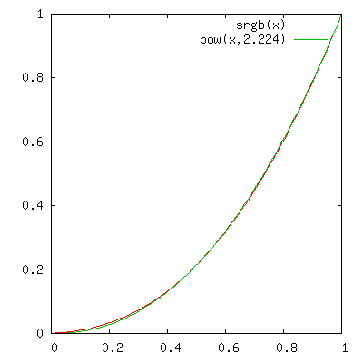

About Gamma
When calibrating display devices, the notion of "gamma value" quickly
becomes a topic for discussion. Various numbers are often bandied about
as if they have a well known and accepted meaning, but it turns out
that gamma values are not a very precise way of specifying real world
device behavior at all.
A "gamma" curve is typically thought of as an ideal power curve, but no
real world device has the necessary zero output at zero input to be
able to match such a curve, and in general a display may not exactly
reproduce an idealized power curve shape at all. The consequence of
this is that there are countless ways of matching a real world curve
with the ideal gamma power one, and each different method of matching
will result in a different notional gamma value.
Argyll's approximate specification and reading is simply the gamma of
the ideal curve that matches the real 50% stimulus relative-to-white
output level. I think this is a reasonable (robust and simple)
approximation,
because it matches the overall impression of brightness for an image. A
more sophisticated approximation that could be adopted would be to
locate the idea power curve that minimizes the total delta E of some
collection of test values, but there are still many details that the
final result will depend on, such as what distribution of test values
should be used, what delta E measure should be used, and how can a
delta E be computed if the colorimetric behavior of the device is not
known ? Some approaches do things such as minimize the sum of the
squares of the output value discrepancy for linearly sampled input
values, and while this is mathematically elegant, it is hard to justify
the choice of device space as the metric.
There are many other ways in which it could be done, and any such
approximation may have a quite different numerical value, even though
the visual result is very similar. This is because the numerical power
value is very sensitive to what's happening near zero, the very point
that is non-ideal. Consider the sRGB curve for instance. It's
technically composed of a power curve segment with a power of 2.4, but
when combined with its linear segment near zero, has an overall curve
best approximated by a power curve of gamma 2.2. Matching the 50%
stimulus would result in yet another slightly different approximation
value of about 2.224. All these different gamma values represent curves
that are very visually similar.

The result of this ambiguity about what gamma values mean when applied
to real world curves, is that it shouldn't be expected that there are
going to be good matches between various gamma numbers, even for curves
that are very visually similar, unless the precise method of matching
the ideal gamma curve to the real world curve is known.